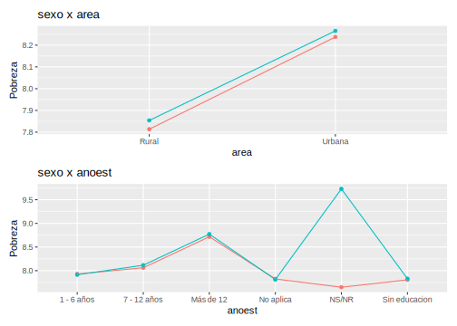

8.3 Validación de encuesta frente al censo.
library(survey)
library(srvyr)
library(patchwork)
censo_dam2 <- readRDS("Recursos/Día2/Sesion4/Data/censo_mrp_dam2.rds")
p1_dam <- Plot_Compare(dat_encuesta = encuesta_mrp,
dat_censo = censo_dam2,
by = "dam")
p1_anotes <- Plot_Compare(dat_encuesta = encuesta_mrp,
dat_censo = censo_dam2,
by = "anoest")
p1_edad <- Plot_Compare(dat_encuesta = encuesta_mrp,
dat_censo = censo_dam2,
by = "edad")
p1 <- (p1_dam)/(p1_anotes + p1_edad)
# ggsave(plot = p1,
# filename = "Recursos/Día2/Sesion4/0Recursos/plot_comp.png",
# scale = 2)
Evaluando interacciones en la encuesta
encuesta_mrp$pobreza <- encuesta_mrp$logingreso
(plot_interaction(dat_encuesta = encuesta_mrp, by = "sexo",by2 = "area")/
plot_interaction(dat_encuesta = encuesta_mrp, by = "sexo",by2 = "anoest"))
(plot_interaction(dat_encuesta = encuesta_mrp, by = "sexo",by2 = "edad")/
plot_interaction(dat_encuesta = encuesta_mrp, by = "anoest",by2 = "edad")
)
Ahora, inspeccionamos el comportamiento de la variable de interés:
media <- mean(encuesta_mrp$logingreso)
Sd <- sd(encuesta_mrp$logingreso)
ggplot(data = encuesta_mrp, aes(x = logingreso)) +
geom_density(size =2, color = "blue") + labs(y = "") +
stat_function(fun = dnorm,
args = list(mean = media, sd = Sd),
size =2) +
theme_bw(base_size = 20) +
theme(axis.text.y = element_blank(),
axis.ticks = element_blank())
Figura 8.2: Distribuición del ingreso de las personas encuestadas
La información auxiliar disponible ha sido extraída del censo e imágenes satelitales
statelevel_predictors_df <-
readRDS("Recursos/Día2/Sesion4/Data/predictors_satelital_dam2.rds")
tba(statelevel_predictors_df %>% head(10))| dam | dam2 | luces_nocturnas | suelo_cultivo | suelo_urbano | modificacion_humana | accesibilidad_hospitales | accesibilidad_hosp_caminado | area1 | etnia2 | sexo2 | edad2 | edad3 | edad4 | edad5 | anoest2 | anoest3 | anoest4 | discapacidad1 | etnia1 | tiene_sanitario | tiene_electricidad | tiene_acueducto | tiene_gas | eliminar_basura | tiene_internet | piso_tierra | material_paredes | material_techo | rezago_escolar | alfabeta | hacinamiento | tasa_desocupacion |
|---|---|---|---|---|---|---|---|---|---|---|---|---|---|---|---|---|---|---|---|---|---|---|---|---|---|---|---|---|---|---|---|---|
| 01 | 01001 | 127.0742 | 105.4925 | 128.6893 | 106.7313 | 99.2730 | 99.4086 | 0.9453 | 0.0116 | 0.5180 | 0.2656 | 0.2129 | 0.1962 | 0.0671 | 0.2101 | 0.4280 | 0.2258 | 0.0574 | 0.0595 | 0.0020 | 0.3925 | 0.0303 | 0.0301 | 0.0058 | 0.2946 | 0.0022 | 0.0211 | 0.0098 | 0.3419 | 0.0381 | 0.1690 | 0.0284 |
| 01 | 01002 | 103.2847 | 101.3865 | 101.7692 | 100.7418 | 99.2012 | 99.2972 | 0.4106 | 0.0030 | 0.5082 | 0.2690 | 0.1853 | 0.1703 | 0.0665 | 0.3188 | 0.4404 | 0.0666 | 0.0706 | 0.0318 | 0.0448 | 0.5895 | 0.4913 | 0.0650 | 0.1084 | 0.6548 | 0.0118 | 0.2598 | 0.1648 | 0.1003 | 0.0648 | 0.3137 | 0.0436 |
| 01 | 01003 | 102.5703 | 100.2905 | 100.6374 | 101.8864 | 99.4002 | 99.4182 | 0.5802 | 0.0039 | 0.5117 | 0.2438 | 0.1828 | 0.1920 | 0.0990 | 0.3647 | 0.4001 | 0.0665 | 0.0865 | 0.0387 | 0.0116 | 1.0000 | 0.0776 | 0.0909 | 0.0035 | 0.5350 | 0.0096 | 0.1028 | 0.0070 | 0.0996 | 0.0630 | 0.2553 | 0.0647 |
| 01 | 01004 | 99.2927 | 98.8613 | 98.8818 | 97.8499 | 99.1040 | 99.1727 | 0.5490 | 0.0042 | 0.5139 | 0.2730 | 0.2032 | 0.1587 | 0.0610 | 0.2666 | 0.4727 | 0.0785 | 0.0603 | 0.0585 | 0.0258 | 0.5185 | 0.1752 | 0.0544 | 0.0123 | 0.7144 | 0.0079 | 0.2572 | 0.0861 | 0.1261 | 0.0592 | 0.3578 | 0.0303 |
| 01 | 01005 | 107.6633 | 100.5877 | 104.8903 | 100.5953 | 99.1894 | 99.2677 | 0.7330 | 0.0255 | 0.5014 | 0.2524 | 0.2309 | 0.1629 | 0.0569 | 0.2359 | 0.3886 | 0.1761 | 0.0511 | 0.0525 | 0.0050 | 0.9308 | 0.2182 | 0.0302 | 0.0013 | 0.3709 | 0.0039 | 0.0329 | 0.0200 | 0.2858 | 0.0538 | 0.2565 | 0.0162 |
| 01 | 01006 | 101.2918 | 99.5395 | 99.7443 | 98.6083 | 99.0990 | 99.1562 | 0.7530 | 0.0111 | 0.5086 | 0.2595 | 0.1996 | 0.1806 | 0.0706 | 0.2497 | 0.4258 | 0.1650 | 0.0576 | 0.0210 | 0.0043 | 0.6154 | 0.0544 | 0.0303 | 0.0183 | 0.4093 | 0.0032 | 0.0464 | 0.0215 | 0.2584 | 0.0582 | 0.2585 | 0.0197 |
| 01 | 01007 | 102.6725 | 100.9469 | 100.5439 | 99.5256 | 99.1553 | 99.2049 | 0.7223 | 0.0028 | 0.5125 | 0.2738 | 0.1898 | 0.1566 | 0.0620 | 0.2593 | 0.4439 | 0.1062 | 0.0500 | 0.0373 | 0.0107 | 0.6809 | 0.0585 | 0.0444 | 0.0432 | 0.5551 | 0.0057 | 0.1440 | 0.0729 | 0.1765 | 0.0728 | 0.3470 | 0.0192 |
| 01 | 01008 | 99.7144 | 100.2844 | 98.6047 | 99.5866 | 99.6891 | 99.6227 | 0.4434 | 0.1588 | 0.5210 | 0.2681 | 0.1871 | 0.1591 | 0.0641 | 0.2909 | 0.4598 | 0.0736 | 0.0479 | 0.0382 | 0.0136 | 0.6316 | 0.1688 | 0.0853 | 0.0085 | 0.7140 | 0.0072 | 0.3095 | 0.0818 | 0.1224 | 0.0563 | 0.3412 | 0.0217 |
| 01 | 01009 | 100.4092 | 99.1593 | 99.8478 | 98.6020 | 99.1182 | 99.1724 | 0.4175 | 0.0026 | 0.5112 | 0.2794 | 0.1917 | 0.1578 | 0.0689 | 0.3231 | 0.4423 | 0.0661 | 0.0544 | 0.0264 | 0.0306 | 0.7288 | 0.3110 | 0.0362 | 0.0308 | 0.5720 | 0.0101 | 0.1213 | 0.0847 | 0.1039 | 0.0731 | 0.3582 | 0.0841 |
| 01 | 01010 | 101.4046 | 102.5622 | 99.7574 | 99.7674 | 99.1833 | 99.2439 | 0.2279 | 0.0128 | 0.5002 | 0.2671 | 0.1919 | 0.1627 | 0.0680 | 0.3292 | 0.4268 | 0.0533 | 0.0480 | 0.0353 | 0.0389 | 0.9180 | 0.1160 | 0.0563 | 0.0315 | 0.7420 | 0.0136 | 0.4060 | 0.3097 | 0.0851 | 0.0743 | 0.3758 | 0.0399 |
8.3.1 Niveles de agregación para colapsar la encuesta
Después de realizar una investigación en la literatura especializada y realizar estudios de simulación fue posible evidenciar que las predicciones obtenidas con la muestra sin agregar y la muestra agregada convergen a la media del dominio. Sin embargo, el realizar estas estimaciones con la muestra agregada reduce el tiempo computacional necesario para la convergencia de las cadenas MCMC. Con esto en mente se se realiza la identificación de las variables por las cuales se agregará la encuesta.
8.3.2 Creando base con la encuesta agregada
El resultado de agregar la base de dato se muestra a continuación:
encuesta_df_agg <-
encuesta_mrp %>% # Encuesta
group_by_at(all_of(byAgrega)) %>% # Agrupar por el listado de variables
summarise(n = n(), # Número de observaciones
# Ingreso medio de las personas con características similares.
logingreso = mean(logingreso),
.groups = "drop") %>%
arrange(desc(n)) # Ordenar la base.La tabla obtenida es la siguiente:
| dam2 | area | sexo | anoest | edad | n | logingreso |
|---|---|---|---|---|---|---|
| 08037 | 1 | 1 | 3 | 2 | 491 | 8.2663 |
| 08037 | 1 | 2 | 3 | 2 | 416 | 8.3813 |
| 01001 | 1 | 1 | 3 | 2 | 379 | 8.2301 |
| 01001 | 1 | 2 | 3 | 2 | 379 | 8.3168 |
| 02004 | 1 | 2 | 3 | 2 | 326 | 8.5024 |
| 23005 | 1 | 2 | 3 | 2 | 308 | 8.1430 |
| 02004 | 1 | 1 | 3 | 2 | 306 | 8.4478 |
| 08037 | 1 | 1 | 3 | 3 | 299 | 8.2545 |
| 25006 | 1 | 2 | 3 | 2 | 294 | 8.3635 |
| 25006 | 1 | 1 | 3 | 2 | 289 | 8.3257 |
El paso a seguir es unificar las tablas creadas.